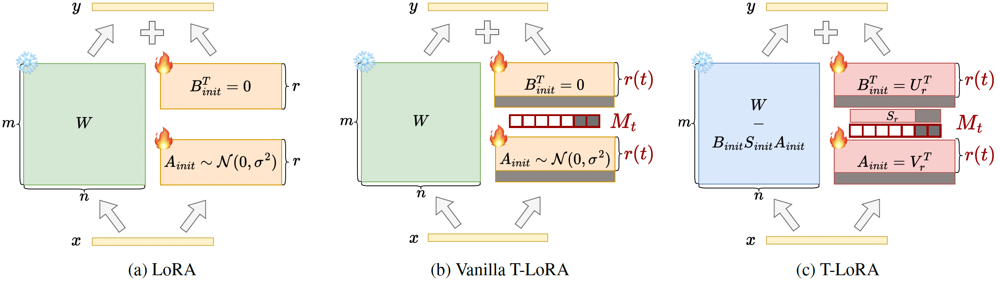

Method Overview

Comparison of training methods: LoRA, the proposed Vanilla T-LoRA, and T-LoRA schemes.
- T-LoRA tackles overfitting problem related to position and background in few-shot diffusion model personalization, enabling versatile and enriched generation;
- The method is based on the observation that higher (noisier) diffusion timesteps are more vulnerable to overfitting than lower ones;
- Key components:
- Timestep-dependent LoRA rank masking to restrict concept information injection: \begin{split} &W_{t} = W + B_{t} A_{t} = W + B M_{t} A, \ A \in \mathbb{R}^{r \times m}, B \in \mathbb{R}^{n \times r} \\ &M_t = M_{r(t)} = \mathrm{diag}(1, 1, \dots, 1, 0, 0, \dots, 0) \in \mathbb{R}^{r \times r}, \\ &r(t) = \lfloor (r - r_{min}) \cdot (T-t)/T \rfloor + r_{min}. \end{split}
- Orthogonal initialization for efficient exclusion of LoRA components: \begin{equation} W_t = W - B_{init}S_{init}M_tA_{init} + BSM_tA, \end{equation} where $A_{init} =V^T[-r:]$, $B_{init} = U[-r:]$ and $S_{init}=S[-r:]$ are the last SVD components of a random matrix $R = USV^T, R \sim N(0, 1/r)$.
FLUX.1 [dev] Results

First image description.

Second image description.

Third image description.

Fourth image description.

Fourth image description.
SD-XL Results

Generation examples for T-LoRA alongside other diffusion model customization baselines.

User study: Pairwise comparison with T-LoRA.

Comparison with other baseline methods.

CLIP IS and TS for LoRA, Vanilla T-LoRA, and T-LoRA across dfferent ranks.
Video Presentation
BibTeX
@article{soboleva2025t,
title={T-lora: Single image diffusion model customization without overfitting},
author={Soboleva, Vera and Alanov, Aibek and Kuznetsov, Andrey and Sobolev, Konstantin},
journal={arXiv preprint arXiv:2507.05964},
year={2025}
}